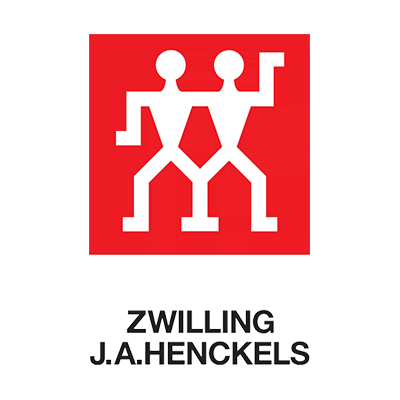

Work Experience
Robokids Instructor
This is my current part-time job as I am studying in University. I teach children ranging from grade 1 up to grade 10. Some of the programs that I use to teach them are: LEGO WEDO, LEGO Mindstorm EV3 and VEX IQ. I am required to teach them how to build, program and problem solve any issue they run into. Every week, the student's parents always come in to check on their children. This is the part where I am required to communicate effectively to report on their child's behavior and progress.
Zwilling J.A Henckles
I used to work as a sales retail associate for Zwilling J.A. Henckles in Metropolis Metrotown. Zwilling sells a variety of kitchenware products such as cookware sets, dinnerware products and a wide range of high quality knives. I assisted customers by explaining and promoting many of their products. The shopping mall gets extremely busy especially during black friday and holidays. This makes all of us work under huge amount of pressure during the holidays.

VEX Robotics Team
I was part of a VEX robotics team. After a few semesters, I was then promoted to be the designing and building captain of the team. I was the main lead on planning and sketching of our robot. We had multiple friendly competitions against other schools in the area. VEX robotics was one of the reason why I chose to go into engineering.